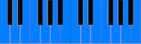
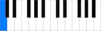
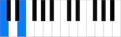
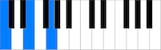

A series of chords that acts as / describes a framework for the music
In Practical Terms
Generally, use chords comprised of notes that are "in key" to create a progression that is "in key".
To narrow down what chords are "in key" for your progression, first see the key's scale notes:

C Major Scale
Then take a note from the key and:
Take the note

(In key of C Major)
Skip a note
Take a note

Skip a note
Take a note

to create a three note chord.
Repeating for each note in the key gives a series of chords that are "in key", e.g:
C | Dm | Em | F | G | Am | Bdim
Creating different sequences from this series of chords gives chord progressions that are "in key".
Example (In key of C Major):
C | Em | Dm | G
More Info
Note many traditional styles of music will use different systems of theory and not follow or have the above system of harmony. However this concept of diatonic chord progressions (or a modified form) is still often incorporated in modern popular productions across the world (contemporary, popular, dance music, film scores etc).